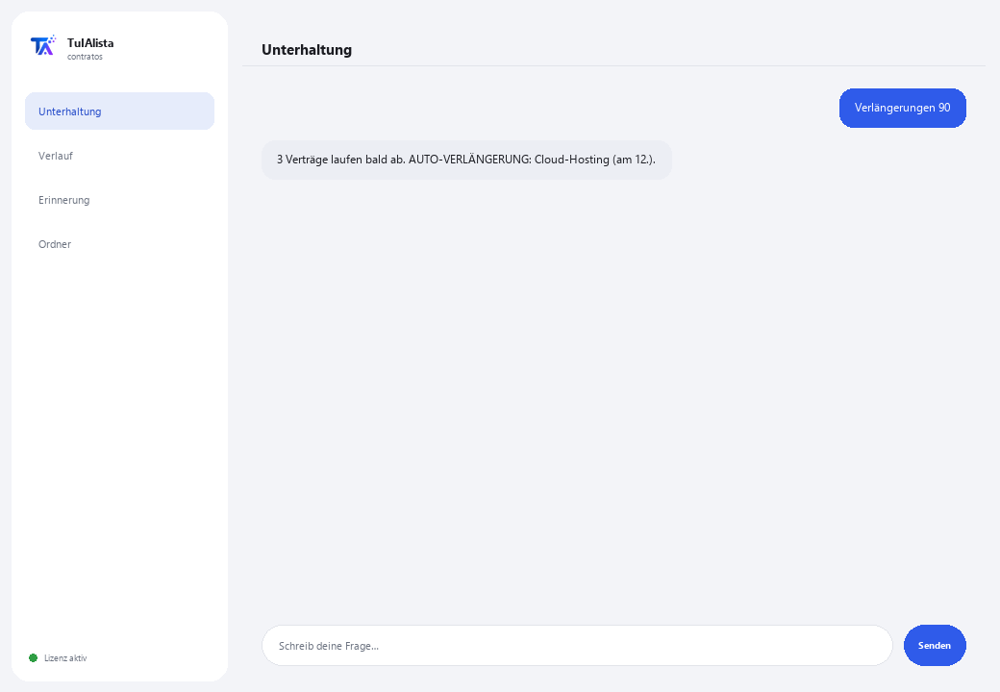

Agent für Verträge und Verlängerungen
Liest Ihre Verträge für Sie, warnt Sie, was sich automatisch verlängert, und erkennt riskante Klauseln, bevor sie Sie Geld kosten.
Was löst er und was brauchen Sie?
Viele Unternehmen verlieren Geld durch Dinge, die in einem Vertrag standen, aber niemand wieder gelesen hat: ein Dienst, der sich automatisch verlängert, eine Kündigungsstrafe, eine automatische Preiserhöhung. Dieser Agent liest Ihre Verträge und warnt Sie vor dem Wichtigen, bevor es zu spät ist.
- Sie brauchen: Ihren Lizenzschlüssel (TIA-XXXX-XXXX-XXXX-XXXX) und den Ordner mit Ihren Verträgen (PDF, Word oder Text). Kein Python, keine technischen Kenntnisse.
- Erstes Ergebnis in weniger als 5 Minuten: Sie installieren, aktivieren, wählen Ihren Ordner und führen Verlängerungen aus, um zu sehen, was bald abläuft.
- Ihre Verträge verlassen nie Ihren Computer — die Analyse läuft lokal.
soporte@tuialista.com oder besuche tuialista.com/soporte — wir antworten normalerweise am selben Werktag.1 Was dieser Agent tut
Sie zeigen ihm den Ordner, in dem Sie Ihre Verträge aufbewahren, und er:
- Liest sie alle (PDF, Word und Text), ohne dass Sie sie einzeln öffnen müssen.
- Warnt Sie, welche Verträge bald ablaufen oder sich verlängern in den nächsten Tagen.
- Erkennt 10 Arten riskanter Klauseln und sagt Ihnen, welche heikel sind.
- Gibt Ihnen eine klare Zusammenfassung jedes Vertrags in Sekunden.
- Beantwortet Ihre Fragen in normaler Sprache: “welcher meiner Verträge verlängert sich automatisch?”
Ergebnis: Sie haben keine Überraschungen mehr und Zeit, vor der Frist zu verhandeln oder zu kündigen.
2 Installation (2 Minuten)
Für Windows. Keine dauerhafte Internetverbindung nötig, nichts wird in die Cloud hochgeladen.
Laden Sie das Installationsprogramm von tuialista.com/descargar herunter (Vertrags-Agent) und öffnen Sie es. Es erstellt eine Verknüpfung mit dem Logo auf Ihrem Desktop — kein Python oder Terminal erforderlich.
Doppelklicken Sie auf das neue Symbol. Fügen Sie Ihren Lizenzschlüssel ein (er wurde Ihnen beim Kauf per E-Mail zugesandt) und klicken Sie auf Aktivieren. Sie sehen ein grünes Häkchen, wenn er gültig ist.
Wählen Sie den Ordner mit Ihren Verträgen aus und klicken Sie auf Agent jetzt verwenden. Beim nächsten Mal startet er direkt — er merkt sich Ihren Schlüssel und Ihren Ordner.
3 So verwenden Sie ihn
Der Agent öffnet ein Chat-Fenster, wie eine Messaging-App — kein schwarzer Programmierer-Bildschirm. Sie schreiben Ihren Befehl oder Ihre Frage in das Textfeld unten, klicken auf Senden (oder Enter), und die Antwort erscheint als Nachricht, genau wie auf diesem echten Bild:

Die folgenden Befehle sind die Wörter, die Sie in dasselbe Textfeld eingeben können:
> Verlängerungen [Tage]Verträge mit bevorstehenden Verlängerungs- oder Ablaufdaten — 60 Tage Standard. Markiert “AUTO-VERLÄNGERUNG” diejenigen, die sich automatisch verlängern, wenn Sie sie nicht rechtzeitig kündigen. Z. B.: Verlängerungen 90.
> Zusammenfassung <Datei>Management-Zusammenfassung des Vertrags in klarer Sprache: worum es geht, die Parteien, das Geld, die Termine und die Warnungen.
> Risiken <Datei>Nur die erkannten riskanten Klauseln, mit ihrem Warnstufe (HOCH, MITTEL, NIEDRIG).
> analysieren <Datei>Vollständige Extraktion: Parteien, Termine, Beträge, ob eine Auto-Verlängerung vorliegt und alle Risikoklauseln.
> freie Frage?Schreiben Sie jede Frage in natürlicher Sprache, z. B.: welche meiner Verträge haben eine Strafe, wenn ich vorzeitig kündige?
> beendenBeendet die Sitzung (funktioniert auch mit exit).
4 Beispiele für häufige Anwendungen
Verträge mit automatischer Verlängerung erkennen
Der teuerste Fall: ein Dienst, der sich ein weiteres Jahr verlängert, weil niemand rechtzeitig gewarnt hat. Verlängerungen 120 — prüfen Sie die mit “AUTO-VERLÄNGERUNG”.
Risiken vor der Unterschrift prüfen
Sie haben einen neuen Vertrag erhalten: speichern Sie ihn in Ihrem Ordner und Risiken neuer-vertrag.pdf — in Sekunden sehen Sie, ob er Exklusivität, Strafen oder ausländische Gerichtsbarkeit enthält.
Ein Verlängerungsmeeting vorbereiten
Verlängerungen 60 → Zusammenfassung schluesselvertrag.pdf
Eine Information finden, ohne jede Datei zu öffnen
wie viel zahle ich monatlich für den Cloud-Vertrag und wann steigt es?
5 Häufig gestellte Fragen
Werden meine Verträge ins Internet hochgeladen?
Brauche ich Internet, um ihn zu verwenden?
Welche Formate akzeptiert er?
Kann er ein gescanntes PDF lesen?
Ersetzt er meinen Anwalt?
Wie viele Verträge kann er handhaben?
Sind die angezeigten Daten 100 % genau?
In welcher Sprache antwortet er mir?
Kann ich den Ordner ändern?
Was bedeuten HOCH, MITTEL und NIEDRIG bei den Risiken?
6 Problemlösung
Ein PDF wird nicht gelesen / zeigt “PDF nicht gelesen”
Zeigt “0 indizierte Verträge”
Zeigt “Lizenz ungültig” oder fordert erneute Verbindung
“Keine KI-Anbieter konfiguriert”
Keine dieser Lösungen hat Ihr Problem behoben? Schreiben Sie uns direkt — wir schauen es uns gerne gemeinsam mit Ihnen an.
soporte@tuialista.com oder besuche tuialista.com/soporte — wir antworten normalerweise am selben Werktag.7 Datenschutz und Vertraulichkeit
Ihre Verträge verlassen nie Ihren Computer.
- Der Agent liest und analysiert die Dateien lokal, auf Ihrem eigenen Gerät. Er lädt sie auf keinen Server hoch und teilt sie mit niemandem.
- Die Erkennung von Verlängerungen, Beträgen und Risikoklauseln erfolgt zu 100 % auf Ihrem Gerät, offline.
- Das Einzige, was über das Internet läuft, ist: (1) eine Überprüfung, dass Ihre Lizenz aktiv ist — die den Inhalt Ihrer Verträge nicht enthält —, und (2) bei einer Anfrage nach Zusammenfassung oder einer freien Frage wird ein Ausschnitt des Vertrags an die KI-Engine gesendet, um die Antwort zu verfassen.